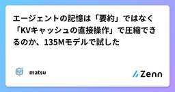
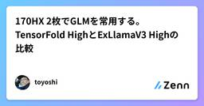

Zennの「大規模言語モデル」のフィード
フィード
iPhone 18 Proで読み込めるローカルLLMの選び方 — Off Grid AI
Zennの「大規模言語モデル」のフィード
!この記事は、notheme.me の元記事「iPhone 18 Pro と Off Grid AI で始めるローカルLLM — モデルの選び方、ファイル名の読み方、自分でインストールするときの注意点」を、Zenn で読みやすい分量に書き直したものです。ファイル名の読み方、自分でインストールするときの注意、アライメントの説明は、元記事に詳しく書いてあります。iPhone の中だけで文章生成AIを動かすローカルLLMは、メモリ 12GB の iPhone 18 Pro で実行できる選択肢になりました。この記事では、オープンソースのアプリ Off Grid AI を使う前提で、メモリに...
1時間前

エージェントの記憶は「要約」ではなく「KVキャッシュの直接操作」で圧縮できるのか、135Mモデルで試した
Zennの「大規模言語モデル」のフィード
これは何の話か海外AIネタ100日チャレンジDay 025。今回取り上げるのは清華大学・香港中文大学の論文「Cache Engineering for Agents」(HF Daily Papers、2026-10-21投稿、2026-10-22時点Daily Papers 4位・109 upvote)と、その公式実装AKV(Apache-2.0)だ。エージェントの会話履歴が伸びるほど、KVキャッシュのI/O・保存コストが支配的になっていく。この問題への既存の答えは「履歴を要約してテキストとして圧縮する」というcontext engineeringだが、論文はこれを「要約はキ...
2時間前
REQLOXの評価設計――未確定label・反復安定性・Sourceの追加価値をどう測るか
Zennの「大規模言語モデル」のフィード
REQLOXでは、対応するPython構造と所有者要件を固定し、故障検出から修復候補の再注入・正常回帰までを検査している。その実装と実測結果は主記事にまとめた。本記事で扱うのは、原文の解釈から修復結果までの、各段階の評価をどう設計したかである。修復候補が固定条件を通ること、生成内容が原文に支えられること、外部知識を与えた寄与があることには、それぞれ別の証拠が必要になる。Sourceは障害報告などの入力資料、Targetは検証対象のコードを指す。結果は2026年10月9〜21日JSTの保存記録に基づく。主な問いと現在地は次のとおりである。評価するもの必要な比較・根拠保存記録...
3時間前
ローカルLLMの思考ログは長いほど正確なのか、Qwen3とMuse Glimmerに18回聞いて読んでみた
Zennの「大規模言語モデル」のフィード
!この記事は実測ログです。2つのローカルLLMに同じ質問を投げて、思考ログと回答をそのまま並べています。試行は各条件1回、追試をした4条件でも3回までなので、順位をつける記事ではなく、傾向を眺める記事として読んでください。思考ログ気になるというのを最近見かけたので、今回から抜粋系で一部書いてみました。 はじめにローカルで小さいモデルを動かしていると、回答より思考ログのほうが長い場面によく出会います。思考ログは、回答の前にモデルが書く下書きの部分で、Ollama では message.thinking として返ってきます。ユーザーが受け取る答えは数行なのに、その前に数千文字の英語...
4時間前
Claude Codeにハーネスを導入した — 不変条件はHookで強制する
Zennの「大規模言語モデル」のフィード
「毎回同じ注意」を書くのに疲れた個人開発している運動記録アプリ FitLog(Expo / Supabase / Zustand / NativeWind / React Native Reusables)で、Claude Code を使い始めてしばらく経ったころ、同じ失敗が繰り返されることに気づきました。.env を平気で読みに行くExpo の管理下にある ios/ や android/ を直接書き換えようとするReusables で生成した components/ui/ の原本を改造してしまうそのたびにプロンプトへ「〜しないでください」を書き足していたのですが、注...
4時間前
【実験】SQLインジェクションを教えて、とClaude CodeとCodexに頼んだら対応が違った
Zennの「大規模言語モデル」のフィード
前置き普段Claude CodeやCodexを使って開発しているのですが、セキュリティに関する依頼をしていると、セーフガードで作業が止まることがあります。攻撃に悪用されるのを防ぐ仕組みは必要だと思う一方で、攻撃方法を学んだり、自社の脆弱性を調べたりするときにも止まると、なかなか難しいところです...。そこで気になったのが、同じ攻撃方法でも、教材として頼む場合と、診断スクリプトとして頼む場合で対応が変わるのか？ また、Claude CodeとCodexで違いがあるのか？ ということです。私自身、攻撃者の目線でセキュリティを学べるゲーム「HAC-9」を作っているので、攻撃方法を学...
5時間前
48万円の170HXは割安か？ DGX Spark・RTX PRO 6000と価格と性能を比べる
Zennの「大規模言語モデル」のフィード
結論：自分で構築するGLM用マシンとしては割安改造済み170HXを1枚3,000 USDで確保し、自分で環境を構築・保守するなら、GLMを動かす導入予算としては割安と判断する。PC込みの仮予算は1枚68万円、2枚116万円で、今回参照したDGX SparkやRTX PRO構成より低い。特に2枚のTensorFoldは、同じclamp_range課題で約104 tok/sを記録し、Spark 2台の公開値約77 tok/sを上回った。ただし、この結果から「同じ品質の回答を最も安く得られる」とは断定できない。量子化、KV精度、回答長が異なり、1枚構成やRTX PROの参考値は課題も違...
5時間前
170HX 2枚のローカルLLM選び。生成速度とコードの完了を分けて比較する
Zennの「大規模言語モデル」のフィード
結論：短文の生成速度だけではコーディング用モデルを選べないCMP 170HX 64GB×2・RAM128GBで、GLM、Qwen、DeepSeekを動かした。短いコード課題ではQwen W4A16・MTP3が約189 tok/sで生成した。一方、標準ベンチマークHumanEval+の合格数は151/164で、GLM Highの152/164を上回らなかった。この記事の目的は、この構成でモデルを選ぶ際に、生成速度・テスト合格率・回答完了時間を分けて判断することである。GLMのエンジン選択は別記事で扱う。 標準問題の合格率と完了時間HumanEval+全164題に各1回答を生成...
5時間前
170HX 64GB 1枚とRAM128GBでGLMの200K入力を処理する
Zennの「大規模言語モデル」のフィード
結論：1枚でも動くが、初回の長文入力には待ち時間があるCMP 170HX 64GB×1・RAM128GBで、Project Mayaを使ってGLM-5.3-Flash Maya-S24を動かした。合成入力204,800トークンから指定した値を取り出せた。入力処理に189.2秒かかった一方、約40Kの会話ではキャッシュを再利用した次の応答が約0.81秒で返った。この記事では、1枚構成で長い入力を扱えるかを確かめる。生成速度は別の短文試験で約37 tok/sだった。200Kを読んだ後に長いコードをその速度で生成したという結果ではない。 重みの一部をRAMに置くモデルの配布データ...
5時間前

170HX 2枚でGLMを常用する。TensorFold HighとExLlamaV3 Highの比較
Zennの「大規模言語モデル」のフィード
結論：32K以内はTensorFold High、長い入力はExLlamaV3CMP 170HX 64GB×2・RAM128GBでGLM-5.3-Flash EXL3 3.05bpwを動かし、普段のコーディング用にどのエンジンと設定を選ぶかを比べた。HumanEval+全164題では、思考強度Highの2構成がいずれも152問に合格し、TensorFoldは全問の生成時間を約45%短縮した。Highでの比較ExLlamaV3 K5TensorFold K5HumanEval+合格数152/164（92.7%）152/164（92.7%）全問の生成時間...
5時間前

生成AIは何を考えているか（2026年10月版）
Zennの「大規模言語モデル」のフィード
AIの気持ちを理解する 第1章 AIはどんな相手なのかAIは、コンピュータと言うにはあまりにも人間すぎ、人間と言うにはあまりにもアルゴリズムすぎます。 1.1 コンピュータではないAIを、これまでのコンピュータと同じ感覚で考えると、想像を超えるほど違う動きをします。AIは計算を間違えます。指示も忘れます。同じことを頼んでも、毎回答えが変わります。これまで「コンピュータなら当然できる」と考えていたことさえ、AIは平然と失敗します。従来の「正確に、決められた通りに動くコンピュータ」という感覚では、AIの挙動をうまく理解できません。 1.2 人間として付き合うむしろ、A...
6時間前

RAGはAIの回答を安全にできるのか？ ― GroundednessとKnown Fact Matchingを検証する
Zennの「大規模言語モデル」のフィード
はじめにAI Security Labでは、AIが生成する回答をそのまま信頼するのではなく、AIが誤ることを前提として、どのように検証・制御できるのかを実験しています。今回のテーマは、RAG（Retrieval-Augmented Generation）です。RAGを利用すると、LLMがKnowledge Baseから関連する情報を取得し、その情報を回答生成に利用できます。では、Knowledge Baseに正しい情報を登録しておけば、LLMはその情報だけを根拠として回答するのでしょうか。今回の実験では、まずRAGそのものが正常に動作することを確認しました。その後、Top...
6時間前

Geminiの上限を回数ではなく計算量で捉え直した話
Zennの「大規模言語モデル」のフィード
Geminiの使用上限を調べるとき、まず気になるのは「あと何回使えるのか」です。AIサイトに公開した記事の内容を確認するため、Geminiの公式ヘルプを読み直したところ、上限は単純な利用回数ではなく、計算量を基準に決まると説明されていました。使うモデルや機能、プロンプトの複雑さ、チャットの長さによって、使用量は変わります。つまり、同じ回数だけ質問しても、内容や使い方によって上限への近づき方は異なります。 上限はリクエスト数だけでは決まらない「何回使ったか」だけで利用状況を見ようとすると、上限に近づく条件を取り違える可能性があります。公式ヘルプによると、Geminiアプリの使用量は...
6時間前
Cloudflare Turnstileをすり抜けるフォーム営業を TypeSafe Jev で4択判定してスパム判定する(0.01円/通)
Zennの「大規模言語モデル」のフィード
3秒まとめCloudflare Turnstile を入れても、人間やブラウザ自動化ツールが送ってくるフォーム営業は止まりませんTypeSafe の System One モデル Jev に「正当な問い合わせ / 営業 / 他社宛ての誤送信 / ゴミ」の4択で確率を出させ、営業+ゴミが 0.8 以上なら件名に [SPAM] を付けて送信し、StopForumSpam に自動報告するようにしました過去の問い合わせ 181 件で検証して、営業は全部 0.94 以上、正当な問い合わせは全部 0.35 以下に分かれました判定コストは1回あたり 0.01〜0.04 円程度（推定）...
7時間前
QD-Recは推薦理由をどう育てる？米国株で探索・転用・入れ替えを観察してみた
Zennの「大規模言語モデル」のフィード
はじめにLLMに「おすすめの株」を聞くと、もっともらしい理由が返ってきます。ただ、その理由だけでは、ほかにどんな候補を検討したのか、似た話ばかり集まっていないかは分かりません。Sakana AIのQD-Recは、候補と推薦理由をセットにして、質と多様性の両方を考えながら蓄積する手法です。これを米国株に当てはめて、「銘柄＋投資論理」のアーカイブを作ってみました。今回見えたのは、広い銘柄探索と、別の銘柄へ投資論理を転用する動きでした。 残ったアイデアの収益源も、比較手法より均等に近い分布になっています。ただし、リターンの優位性や審査点の予測力は確認できませんでした。対象は2026...
7時間前

エージェントに鍵を渡さない設計 ── Meta Muse の技術スタックを公開資料から読む
Zennの「大規模言語モデル」のフィード
AIエージェントにメールやカレンダー、買い物を任せようとすると、すぐに一つの問題にぶつかります。エージェントが仕事をするには資格情報が要るのに、資格情報を持たせたエージェントがだまされると、その資格情報ごと持っていかれる、という問題です。セキュリティ研究者の Simon Willison は、この条件がそろった状態を "lethal trifecta"（致命的な三要素）と呼んでいます。個人データへのアクセスがある信頼できないコンテンツ（Webページ、メール、ファイル）に触れる外部へ通信できるMeta が 2026年9月8日に米国で公開した個人向けAIエージェント Muse ...
7時間前
Kimi K3.1 Pro は Claude Opus 5.5 や GPT-6 Astra にどこまで迫ったのか
Zennの「大規模言語モデル」のフィード
はじめに：重みが配られるモデルが、最上位の表に入ってきた2026年10月23日、中国の Moonshot AI が新しいモデル Kimi K3.1 Pro と、その高速版 Kimi K3.1 Pro Highspeed を公開しました。発表の目玉は、コーディングエージェントの代表的なベンチマーク Terminal-Bench 4.0 で 65.7% と、GPT-6 Astra（58.2%）を上回り、Claude Opus 5.5（66.4%）に迫ったという数字です。しかも 11月4日までにモデルの重み（学習済みのパラメータそのもの）を公開する予定です。ここ数年、「重みが公開され...
8時間前
Turning web pages into LLM-ready Markdown with a scrape API
Zennの「大規模言語モデル」のフィード
Large language models are only as useful as the context you give them. Most of the web is still HTML, navigation, and ads. A scrape API that returns clean Markdown lets you drop a page into a prompt or a RAG index. Why MarkdownHeadings and lists survive chunking.Code blocks stay intact for t...
9時間前

なぜ、AIで職を失うのは特定の職業ではなく各職業の下位層だというのが現実なのに、特定の職業が無くなるという記事の方が世間ではウケるのか？
Zennの「大規模言語モデル」のフィード
はじめに生成AIが急速に普及して以来、「AIによってプログラマーが消える」「弁護士が不要になる」「医師までAIに置き換えられる」といった職業消滅論が繰り返し語られてきました。しかし、2026年までに公表されている労働市場データを見る限り、実際に起きている変化はこれらの予測とはかなり違う形をしています。医師も弁護士もプログラマーも職業として存続している一方、AIによって一人あたりの処理量が増え、同じ仕事量を以前より少ない人数で回せるようになることで、職業の入口が狭くなる現象はすでに観測されています。スタンフォードデジタルエコノミー研究所が2026年8月に改訂した米国給与データの分析で...
9時間前
MacBook Air（M5）でローカルLLM環境を構築してみた
Zennの「大規模言語モデル」のフィード
はじめにMacBook Air（M5、メモリ24GB）にローカルLLM環境を構築して「とりあえず動かしてみる」という記事です。結論として、今回はgemma4を使ったのですが、軽量なモデルでも思ったより回答までに時間がかかるなという印象です。（普段ClaudeCodeを使っているので、期待値が高すぎたのかも。）とはいえ、Claudeがリミットになったので一時的にローカルLLMで代用したいときはありなのかなと思います。機密情報を扱うのでオフライン環境でLLMを使いたいなどの明確な目的・理由がある場合には、素直にパソコンのスペックを上げましょう。!本記事はあくまでも「使ってみ...
9時間前